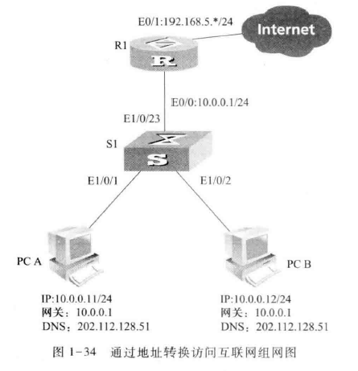
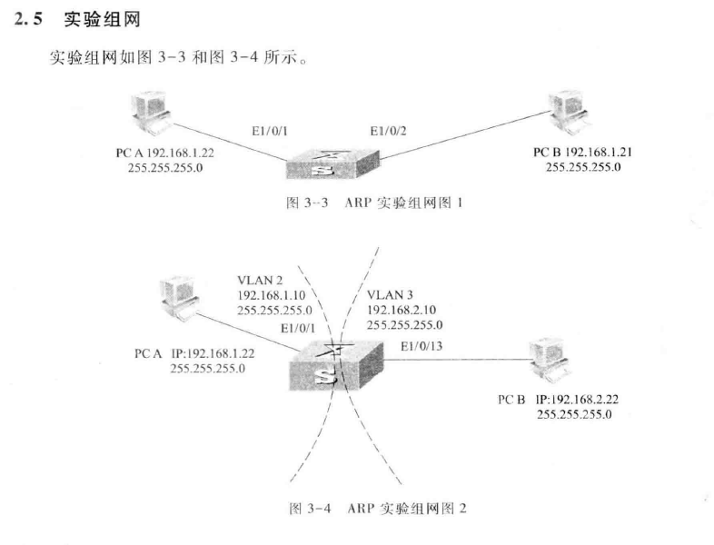
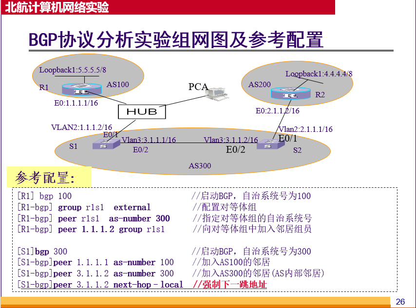
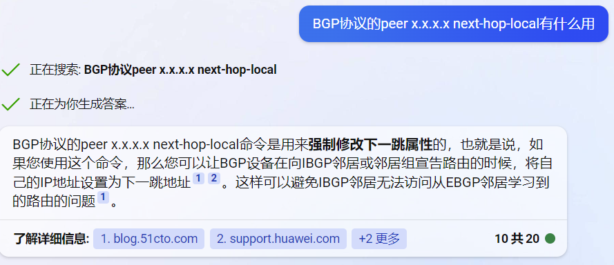

「BUAA Computer Network Experiment」Notes Part 0 前言 线下实验室和线上网络实验室的设备版本和指令有少量区别，下文中多数特殊说明 的情况是针对线下实验室环境毕竟考试也要在线下。另外，不同套件的实验顺序和内容也有所不同，下文均指套件二。
本笔记可能并不全面，不能作为jwsy的指导书使用，读者仍需结合ppt、常见问题解答、教材等学习。
Part 1 实验一 网络实验入门 视图 对于路由器和交换机，其在不同视图下执行不同指令，主要分为用户视图 和系统视图 。
用户视图 系统视图 1 2 <h3c>system-view // 由用户视图进入系统视图 [h3c]
清空网络设备配置 在实验开始之前，一定记得清空网络设备（路由器和交换机）的配置。
1 2 <h3c>reset saved-configuration // 删除已保存的配置，选y <h3c>reboot // 重启设备，先选n再选y
display查看当前配置，可以在任意视图下使用。
1 2 3 <h3c>dis cu // display current-confiiguration的缩写，查看系统当前的配置 <h3c>display version // 查看当前系统版本 [h3c]display interface g 1/0/1 // 查看千兆以太网端口1/0/1的信息
注意，不同网络设备（如线下和线上）的接口编号可能有所不同，需要使用dis cu显示当前设备的各接口编号，根据实际设备编号调整命令
技巧：dis cu后可能行数较多不能一次显示完整，此时使用空格键会放出接下来的一屏，使用回车键会放出接下来的一行
进入指定以太网接口视图 配置路由器/交换机接口时，往往需要先进入接口视图：
1 [R1]inter g 0/0 // interface g 0/0的缩写，进入编号为0/0的千兆以太网口
配置以太网接口IP 1 2 3 <R1>system-view // 进入系统视图 [R1]inter g 0/0 // interface g 0/0的缩写，进入千兆以太网接口0/0 [R1-...0/0]ip address 192.168.0.1 24 // 配置该接口的IP地址为192.168.0.1，子网掩码为255.255.255.0，和ip address 192.168.0.1 255.255.255.0是等价的
NAT地址转换 
1 2 3 4 5 6 7 8 [R1]acl basic 2001 // 在V7设备中（线下设备），使用acl basic命令；在V5设备中（线上设备），使用acl number命令 [R1-acl-2001]rule permit source 10.0.0.0 0.0.0.255 [R1-acl-2001]rule deny sourse any // 允许IP源地址为10.0.0.0/24的外出数据包 [R1]nat address-group 1 [R1-address-group-1]address 192.168.5.105 192.168.5.109 // 定义一个包含5个公网地址的地址池，地址池名为1 [R1]interface e 1/0/1 [R1-Ethernet 1/0/1]nat outbound 2001 address-group 1 // 在出接口e 1/0/1启动地址转换 [R1]ip route-static 0.0.0.0 0.0.0.0 192.168.5.1 // 在路由表添加静态路由
当和OSPF等相结合时，需要通告默认路由 1 2 [R1]ospf // 进入ospf [R1-ospf-1]default-route-advertise cost 100 // 通告默认路由配置
Part 2 数据链路层实验 VLAN VLAN，虚拟局域网，是数据链路层划分局域网的重要技术，用于划分广播域。
基于端口的划分 基于端口的划分，具体指基于交换机端口的划分，指交换机的某些端口连接的主机在一个广播域内，另一些端口连接的主机在另一个广播域内。即，VLAN和端口所连接的主机无关。
目前的主机都不支持带有tag域的以太网数据帧，即，认为带有tag的以太网数据帧为非法帧，只能发送和接收标准以太网数据帧。因此，交换机将数据发送给主机的时候必须删除tag域。
基于子网的划分 根据主机使用的IP地址所在的网络子网来划分广播域，即，IP地址属于同一个子网的主机属于同一个广播域。
VLAN端口的分类 交换机的端口可以分为Access, Trunk和Hybrid三类。
Access：连接不支持VLAN技术的终端设备（如主机）的（交换机）端口
Trunk：连接支持VLAN技术的网络设备（如交换机）的（交换机）端口，收到的数据一般带有VLAN标签（数据帧VLAN和端口默认VLAN ID相同的除外）；向外发送数据帧时，须保证接收端可以区分不同的VLAN，因此常常需要添加VLAN标签（数据帧VLAN ID和端口默认VLAN ID相同的除外），一般用于交换机之间的连接 。
Hybrid：Access和Trunk的混合模式，在Hybrid下工作的端口可以属于多个VLAN，可以接收和发送多个VLAN的报文，可以用于交换机之间的连接，也可以用于连接用户。
默认VLAN 每个（交换机）端口的属性，值为pvid，可以人为设置。交换机从某个端口收到一个不带VLAN标签的数据帧的时候，会在交换机内部将该数据帧视为带默认VLAN标签的数据帧。
H3C交换机初始化时，将每个端口设置为VLAN1，且VLAN1是每个端口的默认VLAN(pvid=1)，VLAN1是untagged的。
带标签（tagged）和不带标签（untagged） tagged和untagged是端口的VLAN属性，用于确定从该端口发出的数据帧是否带VLAN标签。
一般来说，Access端口是untagged的；Trunk端口只有默认VLAN才是untagged，其他端口都是tagged；Hybrid端口比较灵活，可以自由设置。
配置VLAN 创建/删除VLAN 1 2 [h3c]vlan 2 // 创建vlan 2，2可以替换为其他vlan id，执行后会变为[h3c-vlan2] [h3c]undo vlan 2// 删除vlan 2，2可以替换为其他vlan id
向VLAN中添加/删除端口 1 2 3 [h3c]vlan 2 // 创建/进入 vlan 2 [h3c-vlan2]port e 1/0/1 to e 1/0/3 // 进入vlan后，使用port ... to ...将某一范围内的端口添加到该VLAN，使用的是基于端口的VLAN划分。需要注意的是，e是Ethernet的缩写，线下网络实验室应当使用g [h3c-vlan2]undo port e 1/0/1 to e 1/0/2 // 将e 1/0/1 to e 1/0/3从VLAN2中删除
指定端口类型 1 2 3 4 [h3c]int e 1/0/1 // 首先进入指定的端口 [h3c-Ethernet 1/0/1]port link-type trunk // 将端口类型设置为trunk [h3c-Ethernet 1/0/1]undo port link-type // 取消端口类型设置 [h3c-Ethernet 1/0/1]port link-type hybrid // 将端口类型设置为hybrid
指定/删除端口的默认VLAN ID 1 2 3 [h3c]int e 1/0/1 // 首先进入指定的端口 [h3c-Ethernet 1/0/1]port trunk pvid vlan 2// 指定端口默认VLAN ID为2 [h3c-Ethernet 1/0/1]undo port trunk pvid vlan // 删除端口的默认VLAN ID
指定/删除Trunk端口可以通过的VLAN数据帧 1 2 [h3c-Ethernet 1/0/1]port trunk permit vlan 2 to 3 // 允许通过2和3的数据帧 [h3c-Ethernet 1/0/1]undo port trnk permit vlan 2 to 3
将Hybrid端口加入到指定的已存在的VLAN，并标记为tagged或untagged 1 [h3c-Ethernet 1/0/1]port hybrid vlan 30 40 untagged
配置VLAN IP 1 2 [H3C]inter vlan 2 // 进入interface vlan 2 [H3C-Vlan-interface3] ip addr 40.1.1.1 24 // 配置VLAN2的ip
PPP协议 1 2 3 4 5 6 [R1-Serial1/0]link-protocol ppp // 配置PPP <R1>debugging ppp all // 打开PPP的debug开关 <R1>terminal debugging // 显示debug信息 [R1-Serial 1/0]shutdown // 关闭接口 [R1-Serial 1/0]undo shutdown // 启用接口
PAP验证 1 2 3 4 5 6 7 8 9 10 11 12 // R1 主验证方 [R1]local-user RTB class network // 配置用户 [R1-local-network-RTB]service-type ppp // 配置服务类型 [R1-local-network-RTB]password simple aaa // 配置用户密码 [R1]interface Serial 1/0 [R1-Serial1/0]ppp authentication pap // 授权PAP验证 // R2 被验证方 [R2]interface Serial 1/0 [R2-Serial 1/0]ppp pap local-user RTB password simple aaa // 配置PAP用户名和视图 <R1>debugging ppp pap all <R1>terminal debugging
CHAP验证 1 2 3 4 5 6 7 8 9 10 11 12 13 14 15 [R1]local-user RTB class network // 配置用户列表 [R1-luser-network-RTB]service-type ppp // 配置服务类型 [R1-luser-network-RTB]pasword simple aaa // 配置用户对应的密码 [R1]Serial 1/0 [R1-Serial 1/0]ppp authentication-mode chap // 授权CHAP验证 [R1-Serial 1/0]ppp chap user RTA // 配置本地名称 [R2]local-user RTA class network // 配置用户列表 [R2-luser-network-RTA]service-type ppp //配置服务类型 [R2-luser-network-RTA]password simple aaa // 配置用户对应的密码 [R2]interface Serial 1/0 [R2-Serial 1/0]ppp chap user RTB // 配置本地名称 <R1>debugging ppp chap all <R1>terminal debugging
Part 3 网络层实验 配置VLAN的IP和掩码 
似乎只有明确标注的时候需要配
1 2 3 4 [S1]vlan 2 [S1]port e 1/0/1 [S1]inter vlan 2 [S1-Vlan-interface]ip add 192.168.1.10 24
注意，上图需要配置PCA和PCB的默认网关分别位VLAN的ip
查看路由表 1 [H3C]display ip routing-table
Part 4 OSPF协议 配置Router ID 1 2 3 <H3C>system-view [H3C]router id 1.1.1.1 // 配置路由器的router id为1.1.1.1 [H3C]undo router id
启动OSPF 1 2 3 4 5 [R1]ospf // 启动ospf协议 [R1]undo ospf // 关闭ospf协议 [R1-ospf-1]area 0 // 创建area 0区域视图 [R1-ospf-1]undo area 0 // 删除area0 [R1-ospf-1]network 1.1.1.0 0.0.0.255 // 指定网段运行OSPF协议
显示OSPF调试信息 1 2 <R1>debugging ospf event <R1>dterminal debugging
配置回环地址（LoopBack） 1 2 [h3c]inter loop 1 // 进入loopback1 [h3c-LoopBack1]ip addr 4.4.4.4 32 // 配置ip为4.4.4.4/32
配置串口（Serial） 路由器间不能使用以太网口直连，需要使用串口。
1 2 [R1]interface e 0/0 // 进入串口0/0 [R1-Serial 0/0]ip addr 192.168.1.1 24
配置OSPF Cost 1 2 3 4 5 6 7 8 9 // 为VLAN配置ospf cost [R1]inter vlan 3 [R1-Vlan-Interface3]ospf cost 100 /// 配置ospf cost // 为端口配置ospf cost [R1]inter g 0/0 [R1-G..0/0]ospf cost 100 // 配置ospf cost // 为串口配置ospf cost [R1]inter s 0/0 // 进入串口 [R1-Serial0/0]ospf cost 200 // 配置ospf cost
配置静态路由 静态路由是由网络管理员手动配置的路由，制定了到达目的网络的出口接口、网络掩码和下一跳地址。
1 [H3C]ip route-static 129.1.0.0 255.255.0.0 129.0.0.2 // 配置静态路由，目的网络的IP地址是129.1.0.0，目的网络的子网掩码是255.255.0.0，下一跳路由器的IP地址是129.0.0.2
配置缺省路由 1 [H3C]ip route-static 0.0.0.0 0.0.0.0 129.0.0.1 // 配置缺省路由器为129.0.0.1，和计算机网关的作用类似
查看OSPF LSDB 1 [R1]display ospf lsdb router
排查故障指令 1 2 [R1]display ospf peer // 查看邻居路由器状态 [R1]reset ospf all // 重启ospf协议
路由引入 将静态路由或直连路由导入到动态路由协议中，使得其他路由器可以通过动态路由协议学习到这些路由。
1 2 3 [S1-ospf]import-route direct // 引入直连路由 [R1]ip route 192.168.5.0 255.255.255.0 192.168.3.2 // 配置静态路由 [R1-ospf]import-route static // 引入静态路由
tracert tracert命令可以追踪经过的路由器路径：
1 tracert -d 10.35.3.1 // PC可以使用-d，但是路由器和交换机似乎不支持
网络设备默认不回应tracert命令，因此需要手动开启：
1 2 [S1]ip ttl-expires enable [S1]ip unreachables enable
Part 5 BGP实验 启动BGP 1 [R1]bgp 100 // 在R1上启动BGP协议，AS号为100
加入邻居 
1 2 3 4 [S1-bgp]peer 1.1.1.2 as-number 300 // 1.1.1.2是在AS300中和R1相连的IP(?看图说话属于是) [S1-bgp]peer 3.1.1.2 as-number 300 // AS内部邻居 [S1-bgp]address-family ipv4 unicast // 设置地址簇为IPv4 [S1-bgp-ipv4]peer 3.1.1.2 enable // 在IPv4视图中使能邻居设置
强制下一跳为本身接口（next-hop-local） 1 [S1-bgp]peer 3.1.1.2 next-hop-local // 强制下一跳为本身接口
笔者认为，这是由于S1和S2是IBGP。举例而言，S1向S2广播路由的时候，需要让S2将新学习到的路由的下一跳设为S1，这样IBGP邻居（S2）就可以访问从EBGP邻居学习到的路由了

查看BGP路由表 1 [R1-bgp]display bgp routing-table // 查看BGP路由表
查看BGP邻居状态 向BGP注入路由信息 1 2 [R1]bgp 100 // 进入BGP视图 [R1-bgp]network 5.5.5.5 255.255.255.255 // 注入5.5.5.5/32网段的路由信息
ping-a可以指定用哪个IP去ping。
1 [R1]ping -a 5.5.5.5 4.4.4.4 // 以5.5.5.5作为源地址ping 4.4.4.4；如果不用-a参数，那么就会用别的IP去ping，而别的ip没有注入路由，因此会无法ping通
debug信息 1 2 <R1>debug bgp event <R1>terminal debugging
路由引入 1 [R1-bgp]import-route direct // 引入直连路由
路由策略 基于ACL的路由过滤 1 2 3 4 5 [R2]acl number 2001 [R2-acl-basic-2001]rule 0 deny source 5.0.0.0 0.255.255.255 [R2-acl-basic-2001]rule 1 permit source 0.0.0.0 255.255.255.255 [S2]bgp 300 [S2-bgp]peer 2.1.1.2 filter-policy 2001 export // 配置基于ACL的路由过滤
配置基于AS-Path的路由过滤 1 2 3 4 [S1]ip as-path 1 deny \b200$ // 设置拒绝来自AS200的路由 [S1]ip as-path 1 permit ^$ // 设置允许本AS的路由 [S1]bgp 300 [S1-bgp]peer 1.1.1.1 as-path-acl 1 export // 配置基于AS-Path的路由过滤
配置基于Route Policy的路由过滤 1 2 3 4 5 6 7 8 [S1]acl number 2001 [S1-acl-basic-2001]rule 1 deny source 6.0.0.0 0.255.255.255 [S1-acl-basic-2001]rule 2 permit source any [S1-acl-basic-2001]quit [S1]route-policy deny6 permit node 10 // 配置route-policy内容 [S1-route-policy]if-match acl 2001 [S1-route-policy]apply cost 888 [S1-route-policy]quit
Part 6 应用层实验 Part 7 传输层实验 Part 8 复杂组网实验 Part 9 期末上机备忘 Step -1 通读试卷，连线组网 需要注意，真正组网的图不一定完全和试卷上的相同。如，当试卷后面某个简答题要求抓获某两个网络设备间的报文时，需要在其中配一个HUB，并连接一台PC以抓取报文。
Step 0 禁用虚拟网卡 开机后对于TCP实验（需要用到Linux系统），就要禁用虚拟网卡。由于一旦操作了网络设备就需要重启才能禁用虚拟网卡，所以这一步要最开始做。
Step 1 清空并重启网络设备 1 2 <H3C>reset saved configuration // y [H3C]reboot // 先n后y
Step 2 取消vlan 1接口的ip addr 网络设备默认interface vlan 1配置了192.168.1.1的IP地址，因此需要undo该地址避免冲突。
1 2 [H3C]interface vlan 1 [H3C-vlan-1]undo ip addr
Step 3 优先配置PC的IP 首先配置PC的IP，注意IP,子网掩码和默认网关。配好后可以ping一下自己确定没有手误。
Step 4 配置网络设备的端口、IP和VLAN 笔者建议先配置这些内容，OSPF/BGP等下一步再配置。另外，可以一边配置一边ping自己或直连IP，确认没有错误。
Step 5 配置 OSPF/BGP/NAT 配置时，可以善用display等命令查看路由表、BGP邻居状态等，也可以随时ping自己IP和判断能ping通的ip，没问题再进行下一步。
Step 6 配置静态路由/路由引入 当不能达到题目要求（如全网连通/PCB ping PCC）时，一点一点分析哪里有问题，并配置静态路由或引入路由（静态/直连）。需要注意题目是否允许配置。
This is copyright.